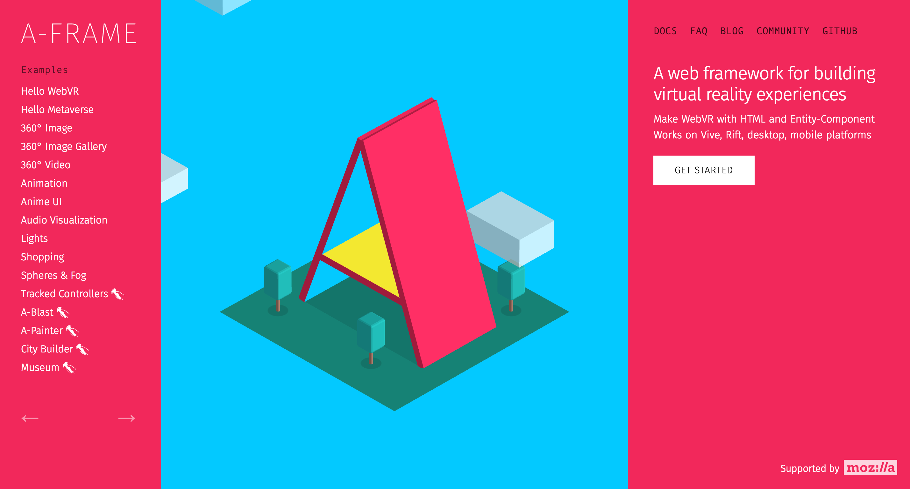
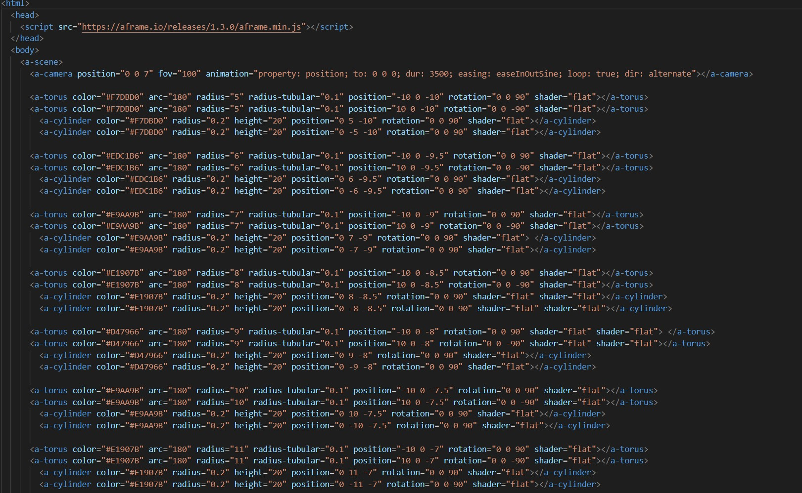

A-Frame Reconstruction
Designing Through Code
Though this was not the version of the A-Frame project that my team and I submitted, this was the version I made by myself, and it's the version I'm most proud of. Most importantly, its the version that made me confident that I could genuinely make something cool with code.
Motion
Though this work is not entirely original, it does find its own footing. The original piece was strictly 2 dimentional, and its notions of movement or scale were left up to interpretation. When moving into 3D space, I chose to explore those ideas.

Techniques
As per the assignment, the project was built using A-Frame in HTML. Truthfuly, the final product was the result of just poking around for an hour or so and seeing what worked and what didn't.

Takeaways?
As I mentioned before, this project was a sign to me that code wasn't just "how to make computers do things". At least not in a boring sense. Code could change how things looked, how things interracted, how we interract with them. It was a challenge to my ignorance, more than anything.